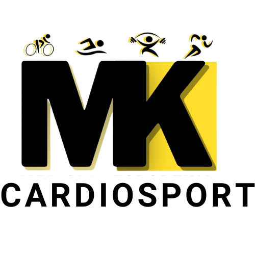

MK-CARDIOSPORT
Prescrição de Suplementação
Médico: Dr. Mauricio Kraemer - CRM-SP 147044
Especialidade: Medicina do Esporte e do Exercício
Data: 28/04/2025
Paciente: Beatriz Lazarini
Prescrição de Suplementação e Estratégia de Endurance
Creatina
5g/dia (após treino ou refeição principal)
Beta-Alanina
6g/dia (divididos em 2 doses)
Nitrato + Citrulina
400-800mg nitrato + 3000-6000mg citrulina antes do treino
Teacrina
100mg pela manhã ou antes do treino
Palatinose
15g 30 a 45 minutos antes do treino
N-Acetilcisteína (NAC)
600mg/dia
Ômega-3 (EPA/DHA)
2g/dia (pela manhã)
Vitamina D3
2000 UI/dia (manhã)
Vitamina K2
100mcg/dia (manhã, junto da vitamina D)
Whey Protein
1 scoop no café da manhã + 1 scoop pós-treino
Probiótico
1 dose/dia (em jejum)
Vitamina C (Targifor C)
500mg/dia (preferência no pós-treino)
Cafeína (em cápsula)
100 a 200mg durante treinos acima de 90 minutos
Observações Importantes
- Priorizar sono de qualidade (mínimo 7h)
- Monitorar café e treino para preservar recuperação
- Reavaliar cortisol matinal em 8 semanas